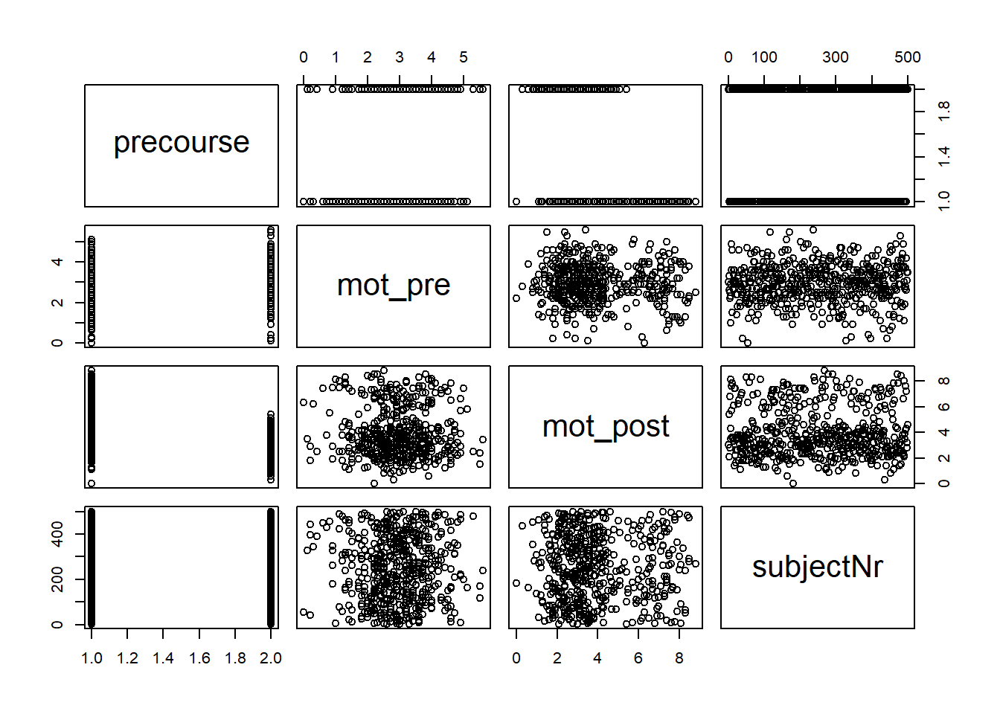

getwd()[1] "C:/Users/bente/Documents/Studium/BachelorPsychologie/Projekte/KlinMethGoettingen/Vorkurs"Herzlich willkommen zum R-Vorkurs des Forschungsmethodenmoduls im klinischen Master an der Georg-August-Universität Göttingen. Zunächst ein paar Worte zu den Zielen dieses Vorkurses.
Dieser Vorkurs dient dazu:
Dieser Kurs dient NICHT dazu:
Gerade mit Bezug auf den ersten Punkt ist mir wichtig, zu betonen, dass Fragen zu jeder Zeit willkommen sind. Wenn ihr eine Frage habt, haben andere diese Frage vermutlich auch. Gleichzeitig lassen mich eure Fragen erkennen, wo ich noch ausführlicher auf Dinge eingehen muss und ob das Tempo angemessen ist. Nur wenn ihr euch traut, zu fragen, wenn euch etwas unklar ist, ist dieser Vorkurs sinnvoll.
Zunächst wollen wir R installieren. Dazu holt ihr euch das Installationsprogramm für euer jeweiliges Betriebssystem mit den folgenden Links:
Wenn ihr die Installation erfolgreich abgeschlossen habt, könnt ihr schon Statistik mit R machen. Mit R selbst geht das aber nur über ein Kommandozeilenfenster. Da das nicht so einfach ist, brauchen wir noch eine sogenannte Entwicklungsumgebung. Die heißt bei R RStudio und muss auch noch installiert werden:
Windows: https://download1.rstudio.org/electron/windows/RStudio-2023.03.0-386.exe
macOS (11+): https://download1.rstudio.org/electron/macos/RStudio-2023.03.0-386.dmg
Linux: Sucht hier nach eurer Distribution
Wenn ihr alles installiert habt, könnt ihr RStudio starten.
Wir werden im Rahmen dieses Kurses mit Quarto-Dokumenten arbeiten. Deshalb wollen wir uns nun mit diesen Dokumenten vertraut machen. Geht dazu auf File > New File > Quarto Document… und gebt einen passenden Titel ein. Drückt anschließend auf Ok.
Nun solltet ihr ein Fenster sehen, in dem ihr Text schreiben könnt. Das ist aber nicht das einzige:
Text lässt sich formatieren (fett und kursiv bspw.)
Es lassen sich Überschriften, Bulletpoints und Links einfügen
R-Code lässt sich auch eingeben und ausführen
Spezielle Elemente wie Überschriften oder R-Code lassen sich einfügen, indem ihr / eingebt. Wenn ihr danach bspw. Heading schreibt, lassen sich verschiedene Überschriften einfügen:
/Heading1 oder /h1 für die Überschrift des gesamten Dokuments
/Heading2 oder /h2 für eine Abschnittsüberschrift
/Heading3 oder /h3 für einen Unterabschnitt
/Heading4 oder /h4 für eine kleine Überschrift
Gebt jetzt /R ein, um einen R Code Chunk einzufügen. Innerhalb von Code Chunks lässt sich R Code schreiben und ausführen. Das probieren wir im nächsten Schritt aus.
getwd()[1] "C:/Users/bente/Documents/Studium/BachelorPsychologie/Projekte/KlinMethGoettingen/Vorkurs"Codechunks lassen sich mit einem Klick auf den kleinen grünen Pfeil oben rechts ausführen.
Dieser Befehl gibt das aktuelle Working Directory zurück. Was das ist, klären wir später. Wichtig ist, dass wir durch diesen Befehl den Pfad zu einem Ordner sehen. Wenn ihr in eurem Explorer oder Finder durch euer Ordnersystem navigiert und auf Ordner doppelklickt, macht ihr nichts anderes, als zu dem aktuellen Pfad einen Teil hinzuzufügen, um in den angeklickten Ordner zu gelangen.
Um das noch besser nachzuvollziehen, macht einen Rechtsklick auf die Leiste, in der die Ordnerstruktur angezeigt wird (Windows) und wählt “Adresse als Text kopieren” aus. Wenn ihr den Pfad in euer Dokument einfügt, solltet ihr folgendes oder ähnliches sehen:
C:\Users\bente\Documents\Studium\BachelorPsychologie\Projekte\KlinMethGoettingen\Vorkurs wenn ihr Windows nutzt
C:/Users/bente/Documents/Studium/BachelorPsychologie/Projekte/KlinMethGoettingen/Vorkurs bei macOS oder Linux
Wie ihr seht, werden Pfade außer der Eigenheit des Trennzeichens zwischen den Ordnern in allen Betriebssystemen ähnlich ausgedrückt. In R haben wir den praktischen Vorteil, dass die Unix-Schreibweise von Pfaden (mit dem / zwischen den Ordnern) in allen Betriebssystemen funktioniert. Das ist auch der Grund, warum der Befehl oben einen Unix-Pfad liefert.
Alle Pfade die mit einem Buchstaben und einem Doppelpunkt starten sind absolute Pfade. Von der Festplatte bis zum 5. Unterordner sind alle Teile vorhanden, um aus dem Nichts zum gewünschten Ordner zu kommen. Manchmal sind sie praktisch, aber oft werden diese Pfade sehr lang und unübersichtlich, sodass man sich schnell eine andere Möglichkeit wünscht.
Diese andere Möglichkeit gibt es auch. Es gibt nämlich auch relative Pfade. Diese zeigen basierend auf dem aktuellen Ordner an, wie zum gewünschten Ordner navigiert wird. Der aktuelle Ordner heißt in R Working directory.
Der Befehl von oben gibt aus, was das aktuelle Working directory ist. Im Fall dieses Dokuments ist es der Ordner auf meiner Festplatte, in dem diese Datei liegt, weil ich mein Working Directory schon passend gesetzt habe. Ihr müsst es noch setzen. Wenn ihr nicht den R-Code benutzen wollt, den ich euch gleich zeige, habt ihr 3 Möglichkeiten, das zu tun:
Mit STRG + SHIFT + H oder CMD + SHIFT + H bei Macs lässt sich mit dem Explorer oder dem Finder der gewünschte Ordner auswählen.
Im Files-Tab des Fensters unten rechts gibt es ein blaues Zahnrad mit der Option “Set as Working Directory”. Klickt man darauf, wird der aktuell angezeigte Ordner zum Working Directory. Hier lässt sich auch mit “Go to Working Directory” das Working Directory direkt anzeigen.
Unter Session > Set Working Directory > To Source File Location lässt sich der Ordner, in dem die aktuell offene Datei liegt, zum Working Directory machen.
Wir benutzen heute Möglichkeit 3, weil das am schnellsten geht. Meist sind Daten auch in dem Ordner des Quarto-Dokuments und können mit relativen Pfaden einfach angesteuert werden.
Um das zu demonstrieren, laden wir nun unsere erste Datei ein.
dat = read.csv("motivation_precourse.csv")Ihr solltet nach dem Ausführen oben rechts im Environment sehen, dass ein neuer Eintrag mit dem Namen “dat” und dem Text “500 obs. of 5 variables” erschienen ist (dafür müsst ihr die Daten haben und das Working directory passend gesetzt haben).
Wir haben hier unseren ersten relativen Pfad geschrieben, in unserem Fall einfach den Dateinamen. Relative Pfade haben keinen Schrägstrich Am Anfang und auch keinen Buchstaben mit Doppelpunkt. So ist klar, dass der Pfad vom aktuellen Ordner ausgeht. Nun möchte ich euch ein paar Kombinationen von verschiedenen Working directorys und den zu unserer Datei führenden relativen Pfaden zeigen.
Dazu nutze ich die Funktion setwd(), den Gegenspieler zu getwd().
setwd("C:/Users/bente/Documents/Studium/BachelorPsychologie/Projekte/KlinMethGoettingen") # Der Überordner von dem Ordner mit der Datei
dat2 = read.csv("Vorkurs/motivation_precourse.csv")
setwd("C:/Users/bente/Documents/Studium/BachelorPsychologie/Projekte/KlinMethGoettingen/Sitzungen") # Der Geschwisterordner von dem Ordner mit der Datei
dat3 = read.csv("../Vorkurs/motivation_precourse.csv")Wenn man ../ schreibt, bedeutet das “Wechsle in den Überordner des aktuellen Ordners”. Ich gelange damit also von dem Sitzungen-Ordner zum KlinMethGoettingen-Ordner.
Mit absoluten und relativen Pfaden kommt man im R-Alltag gut zurecht. Es gibt aber in R noch einen Sonderordner, den sogenannten Home-Ordner. Dieser ist in den allermeisten Fällen (bei Windows) der Pfad zum Dokumente-Ordner und wird am Anfang des Pfades mit einer Tilde (~/) dargestellt. Wir wollen diese Schreibweise eigentlich nicht nutzen, aber R gibt sie manchmal automatisch aus, wenn wir das Working directory von R setzen lassen.
Wenn ich wollte, könnte ich also auch so meine Datei ansteuern:
dat4 = read.csv("~/Studium/BachelorPsychologie/Projekte/KlinMethGoettingen/Vorkurs/motivation_precourse.csv")Wir werden in den Sitzungen oft mit dem Working directory und relativen Pfaden arbeiten und versuchen, absolute Pfade und den Home-Ordner zu vermeiden.
Am Anfang jeder Analyse müssen die gesammelten Daten eingeladen werden. Gerade eben hat das mit der Funktion read.csv reibungslos funktioniert und so wird es auch während der Sitzungen sein, dennoch gibt es verschiedene Formate in verschiedenen Regionen oder bei verschiedenen Umfragetools/Arbeitsgruppen/Universitäten etc.
Deshalb wollen wir uns nun 5 verschiedene Formate anschauen, in denen diese Daten gespeichert sein können.
Deutsche Formatierung: Standardmäßig wird in R das Komma als Trennzeichen zwischen Werten (sep) und der Punkt als Dezimaltrennzeichen (dec) verwendet (englischsprachiger Standard). Im Deutschen dient das Komma aber als Dezimaltrennzeichen, sodass als Standard das Semikolon als Wertetrenner verwendet wird. So formatierte Dateien können mit read.csv2 eingelesen werden.
dat_deutsch = read.csv2("motivation_precourse_deutsch.csv")Whitespace-Trennung: Manchmal werden Dateien weder mit “.”, noch mit “;”, sondern mit einem Leerzeichen oder einem Tabulator getrennt (keine Sorge wenn ihr nicht wisst, was ein Tabulator sein soll, ist nicht weiter wichtig). Unter diesen Umständen können wir zu data.table wechseln. Diese Funktion macht andere Vorannahmen über die Formatierung, deshalb müssen wir ihr auch einstellen, dass die Datei Spaltennamen enthält.
dat_ws = read.table("motivation_precourse_ws.csv", sep=" ", header=T)Datei ohne Spaltennamen: Eigentlich sollten in jeder Datei Spaltennamen vorhanden sein, aber leider ist das nicht immer so. In diesem Fall setzen wir “header” auf FALSE oder F.
dat_nohead = read.csv("motivation_precourse_nohead.csv", header=F)Fehlende Werte: Standardmäßig nimmt read.csv an, dass fehlende Werte als “NA” gekennzeichnet sind. Schauen wir uns dazu folgende Daten nach dem Einlesen genauer an.
dat_na = read.csv("motivation_precourse_na.csv")Andere Formate für NAs: Für die Kodierung von NAs gibt es aber viele verschiedene Konventionen. Möglich sind einfach leere Einträge, die Zahl -1, MISSING, oder auch die Zahl 99. Letzteres ist in der nächsten Datei passiert. Glücklicherweise lässt sich über “na” einstellen, welche Formatierung vorliegt.
dat_weird_na = read.csv("motivation_precourse_weird_na.csv", na="99")Testweise könnt ihr mal ausprobieren, was passiert, wenn wir die Daten mit der falschen Funktion/falschen Angaben einlesen. Richtig eingelesene Daten haben 500 observations, 4 Variablen und NAs werden beim Anschauen des Datensatzes mit einem kursiv gedruckten NA angezeigt.
Die Variable dat (und alle anderen, die mit dat anfangen) ist ein sogenanntes Dataframe. Wir werden in diesem Semester vor allem mit diesem Format arbeiten. Wenn ihr also Dozierende von Dataframes reden hört, meinen sie damit genau diese Variablen, die durch das Einlesen von Daten entstanden sind.
Zum Schluss wollen wir noch unseren ersten Plot machen. Dazu nutzen wir die plot()-Funktion und übergeben ihr einfach unsere Daten.
plot(dat)
Wenn wir R nichts weiter sagen, macht R alle möglichen Plots für die Beziehungen zwischen zwei Variablen mit allen möglichen Kombinationen von Variable und Achse. Dabei steht der Name der jeweiligen Variable in der Diagonalen. In jedem Plot in der ersten Spalte ist also die precourse-Variable auf der x-Achse zu sehen, in der zweiten die Motivation vor dem Vorkurs usw. Nicht alle dieser Plots sind aussagekräftig; der Zusammenhang zwischen Versuchspersonennummer und Teilnahme am Vorkurs ist beispielsweise nicht sehr informativ. Deshalb werden wir uns in der nächsten Sitzung damit beschäftigen, wie sich einzelne Variablen aus dem Dataframe auswählen lassen, um mit diesen in der dritten Sitzung schöne Grafiken zu erstellen.
Das war es auch schon für heute. Wir haben gerade im letzten Teil schon ein paar R-spezifische Programmierschreibweisen implizit benutzt, ohne zu sehr darauf einzugehen, wieso die so sind, wie sie sind. Das wollen wir in der nächsten Sitzung nachholen und dann neben der Auswahl von Variablen einen Blick auf verschiedene Variablenformate werfen.
Im Anhang findet ihr zu jeder Sitzung Codechunks, die ich für die Erstellung der Sitzung benutzt habe. Vielleicht sind die ja für den einen oder die andere spannend.
n = 500
affected = c(rep(0, 250), rep(1, 250))
precourse = c(rep(0, 125), rep(1, 125), rep(0, 125), rep(1, 125))
dat = data.frame(precourse)
dat$precourse = factor(dat$precourse, labels=c("Ohne", "Mit"))
dat$mot_pre = pmin(pmax(round(3 + rnorm(n), 1), 0), 10)
dat$mot_post = pmin(pmax(round(3 + precourse * affected * 4 + rnorm(n), 1), 0), 10)
dat = dat[sample(1:n),]
dat$subjectNr = 1:n
write.csv(dat, "motivation_precourse.csv", row.names=F)
rm(affected, precourse, n)write.table(dat, "motivation_precourse_deutsch.csv", sep=";", dec=",", row.names=F)
write.table(dat, "motivation_precourse_ws.csv", sep=" ", row.names=F)
write.table(dat, "motivation_precourse_nohead.csv", sep=",", dec=".", col.names=F, row.names=F)
dat_na = dat
dat_na$mot_post[sample(dat_na$subjectNr, 50)] = NA
write.table(dat_na, "motivation_precourse_na.csv", sep=",", dec=".", row.names=F)
write.table(dat_na, "motivation_precourse_weird_na.csv", sep=",", dec=".", na="99", row.names=F)
rm(dat_na)